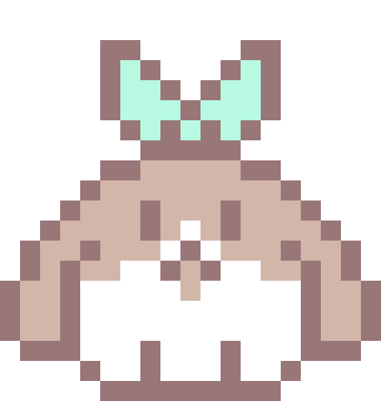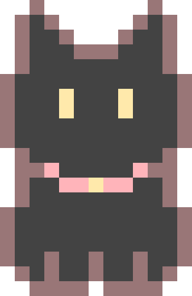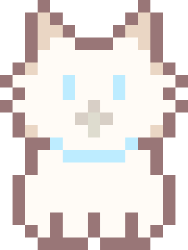
I really love Nanahira. Like, a lot. Like, a whole lot. You have no idea. I love her so much that it is inexplicable, and I'm ninety-nine percent sure that I have an unhealthy obsession. I will never get tired of listening that sweet, angelic voice of hers. It is my life goal to meet up her with her in real life and just say hello to her. I fall asleep at night dreaming of her holding a personal concert for me, and then she would be sorry tired that she comes and cuddles up to me while we sleep together. If I could just hold her hand for a brief moment, I could die happy. If given the opportunity, I would lightly nibble on her ear just to hear what kind of sweet moans she would let out. Then, I would hug her while she clings to my body hoping that I would stop, but I only continue as she moans louder and louder. I would give up almost anything just for her to look in my general direction. No matter what I do, I am constantly thinking of her. When I wake up, she is the first thing on my mind. When I go to school, I can only focus on her. When I go come home, I go on the computer so that I can listen to her beautiful voice. When I go to sleep, I dream of her and I living a happy life together. She is my pride, passion, and joy. If she were to call me "Onii-chan," I would probably get diabetes from her sweetness and die. I wish for nothing but her happiness. If it were for her, I would give my life without any second thoughts. Without her, my life would serve no purpose. I really love Nanahira. I really love Nanahira. Like, a lot. Like, a whole lot. You have no idea. I love her so much that it is inexplicable, and I'm ninety-nine percent sure that I have an unhealthy obsession. I will never get tired of listening that sweet, angelic voice of hers. It is my life goal to meet up her with her in real life and just say hello to her.
I fall asleep at night dreaming of her holding a personal concert for me, and then she would be sorry tired that she comes and cuddles up to me while we sleep together. If I could just hold her hand for a brief moment, I could die happy. If given the opportunity, I would lightly nibble on her ear just to hear what kind of sweet moans she would let out. Then, I would hug her while she clings to my body hoping that I would stop, but I only continue as she moans louder and louder.
I would give up almost anything just for her to look in my general direction. No matter what I do, I am constantly thinking of her. When I wake up, she is the first thing on my mind. When I go to school, I can only focus on her. When I go come home, I go on the computer so that I can listen to her beautiful voice. When I go to sleep, I dream of her and I living a happy life together. She is my pride, passion, and joy. If she were to call me "Onii-chan," I would probably get diabetes from her sweetness and die.
I wish for nothing but her happiness. If it were for her, I would give my life without any second thoughts. Without her, my life would serve no purpose. I really love Nanahira.
I really love Nanahira. Like, a lot. Like, a whole lot. You have no idea. I love he r so much that it is inexplicable, and I'm ninety-nine percent sure that I have an unhealthy obsession. I will never get tired of listening that sweet, angelic voice of hers. It is my li fe goal to meet up her with her in real life and just say hello to her.
I fall asleep at night dreaming of her holding a personal concert for me, and then she would be sorry tir ed that she comes and cuddles up to me while we sleep together. If I could just hold her hand for a brief moment, I could die happy. If given the opportunity, I would lightly nibble on her ear just to hear what kind of sweet moans she would let out. Then, I would hug her while she clings to my body hoping that I would stop, b ut I only continue as she moans louder and louder.
I would give up almost anything just for he r to look in my general direction. No matter what I do, I am constantly thinking of her. When I wake up, she is t he first thing on my mind. When I go to school, I c an only focus on her. When I go come h ome, I go on the computer so that I can listen to her beautiful voice. When I go to sleep, I dream of her and I living a happy life together. She is my pride, passion, and joy. If she were to call me "Onii-chan," I would probably get diabetes from her sweetness and die.
I wish for nothing but her happiness. If it were for her, I would give my life without any second thoughts. Without her, my life would serve no purpose. I really love Nanahira.
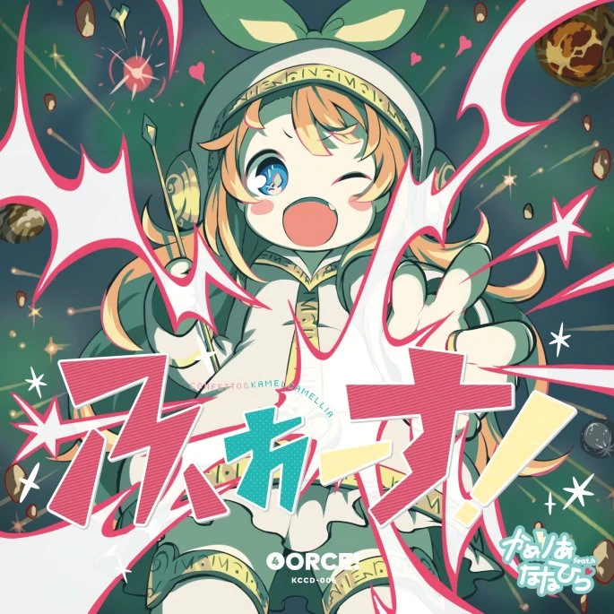
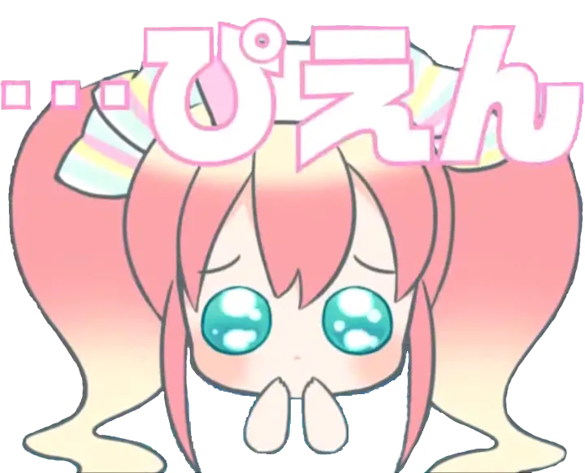
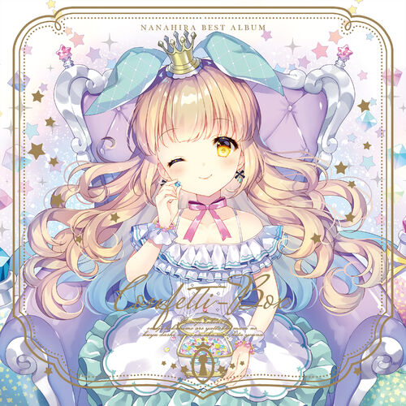
ななひら
I really love NANAHIRA!!!I really love NANAHIRA!!!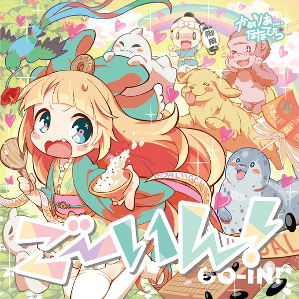I really love NANAHIRA!!!
I really love Nanahira. Like, a lot. Like, a whole lot. You have no idea. I love her so much that it is inexplicable, and I'm ninety-nine percent sure that I have an unhealthy obsession. I will never get tired of listening that sweet, angelic voice of hers. It is my life goal to meet up her with her in real life and just say hello to her. I fall asleep at night dreaming of her holding a personal concert for me, and then she would be sorry tired that she comes and cuddles up to me while we sleep together. If I could just hold her hand for a brief moment, I could die happy. If given the opportunity, I would lightly nibble on her ear just to hear what kind of sweet moans she would let out. Then, I would hug her while she clings to my body hoping that I would stop, but I only continue as she moans louder and louder. I would give up almost anything just for her to look in my general direction. No matter what I do, I am constantly thinking of her. When I wake up, she is the first thing on my mind. When I go to school, I can only focus on her. When I go come home, I go on the computer so that I can listen to her beautiful voice. When I go to sleep, I dream of her and I living a happy life together. She is my pride, passion, and joy. If she were to call me "Onii-chan," I would probably get diabetes from her sweetness and die. I wish for nothing but her happiness. If it were for her, I would give my life without any second thoughts. Without her, my life would serve no purpose. I really love Nanahira. Í̴̺ ̶̟͊r̴̥̆e̷̹̊ả̵ͅl̸͈͋l̷͓̂y̷͓̒ ̸̣̄l̵͖̾o̶̱̚v̶̨̿e̶̬͛ ̸̻̂N̷͕̐a̵̩̚n̵͚̏ȧ̵̲ȟ̶̤i̷̙̓r̴͙͐a̶͉͆.̷̠̀ ̵̳̑L̸̮̑ĩ̴̜k̷̝̾e̵̼͠,̴̠̎ ̴̧̈́a̴̯̾ ̵̳̿l̶͓͠ǒ̵͍t̴̫͝.̵̠̾ ̴̘̆L̸̜͊i̷͇̇k̷͛͜e̴̗͌,̸̬͒ ̷̋͜a̶̱͋ ̸͎̑w̷͍͂h̶̝͌o̸̺̔l̵͈̅e̵̩̓ ̵͉̚l̸̠̔o̸̢̅t̷͙̀.̸̲̀ ̷̗͂Ÿ̵̘o̵̯̾u̸͔͝ ̴͈͒h̴̠̑a̷̭͌v̶̯͛e̵̜̾ ̷͎͠n̴͇͆o̶͓͝ ̵̻̈́î̷͉d̴̹̓e̵̳͛a̷̤͗.̴̌͜ ̶͍̔I̸̤͛ ̷̢̂l̶̯̇ơ̴̹v̷̥̈́ẽ̸̞ ̷̳̾h̷͙͌e̵͍̊r̵͓̉ ̶̹̚s̶͈͂o̸̱̽ ̸̠̿m̸̱̑ů̶̢c̷̡̃h̶͎̄ ̸̮̽t̴̢̅h̴̤̊a̵͉͐t̶̜͝ ̵̬̓i̸̠͗ṫ̴̮ ̵̕͜ī̵̩s̷͖̄ ̷̼̇i̴̞͒n̴͛ͅe̷͔̔ẍ̷̪p̶͚͐l̸̪̊i̸̜͠c̴͙̐a̴̡̓b̸̧̈́l̴̠̆e̸͕̊,̷̟̏ ̸̫̏â̶͜ṋ̵̐d̸́ͅ ̷͑͜I̵͉̅'̴̦͗ṃ̵̂ ̸͎̃ń̸̹i̵̯̍ṋ̶̊e̴͚͐t̸̖̚ỳ̸̬-̶̞̈́n̷̖̆ĩ̵̞n̴̳̈ë̶͎ ̶̲̌p̴̝̉ȩ̴̑ṛ̶͠c̸͎͐e̷̟̎ǹ̸̰t̵͈͌ ̵̰́s̴̤͒ų̸͘r̶̮̃ḛ̴͒ ̸̲͝t̵̮̀h̸͍̍ă̴̜t̸̳͂ ̸͚́I̶͕͂ ̵̭͐ȟ̸̟a̸͓͐v̴̢̽e̷͕͒ ̵̪͠å̸͜n̷̗͋ ̷̱̐u̵̪͒n̶͝ͅh̶̢̀e̷̦̓ä̴͉́l̵̞͠t̸̮͒ḫ̶͋ÿ̴̙ ̴̠͐o̵̩̊ḃ̴̙s̶̳̈́e̷͖̐s̶̼̕s̷̩͐ḭ̸̀o̸̼̾n̷̖̒.̵̬͒ ̶͍̋İ̵͕ ̷̳̓w̵̯͗i̷̙͑l̷͒͜l̸͈̂ ̵̦̀n̴̫͌e̶̯͘v̴͎̉e̵̺͗ŕ̷̖ ̴̗͆g̵͚͋ȇ̸̲t̴̲̔ ̸̫͐t̴͍͂i̶̦͐r̶̡̈́e̴̫͆d̵̻̈́ ̷̬̆o̷̠͝f̷͍͑ ̸̭̂l̶̼̄i̸͓̽s̵̱̑t̵͈͝ë̷͖́n̵̞͘i̸̛̲ń̶̩g̴̨̏ ̷̱͆t̴̼́h̷̭̾ă̴̡ť̴̻ ̵̹͛ŝ̷͔ŵ̴̠ē̵͈e̷̡͊ţ̵̈́,̵̆͜ ̷̪͗ã̷̭n̴̝̑ǵ̷̹e̸͖̚l̸͙̓ĩ̶̼c̶̈́ͅ ̸̟͂v̵͚̉ö̶͎́i̴̯̎c̵͉̍e̴̠̿ ̶͍̉o̴̞̕f̷̬̕ ̵̳̉h̷̳͆ẹ̷͌r̶̯͋s̷̝͗.̵̫͘ ̶̞͋I̶͈͝t̶̫̔ ̴͚̈́ḯ̵̢s̷̭̊ ̶̮̈́m̷̥̏ÿ̴̰́ ̵̺̃l̶̥͑i̵̗͒f̶̜̍e̴̼̓ ̵͔͌g̵̞͠o̶̲̊ạ̵͝l̷̳̊ ̸͓́t̷̢̄o̵̎͜ ̵̛̺m̸̗͝ė̵̠e̶͎͋t̷̪̽ ̵͍̉u̷̻̓p̶̠̒ ̸͖̾h̸̥͌e̵̩͒r̷̞̈́ ̸̱͝w̵͍͒ĩ̵͜ţ̶̃h̶̤̓ ̷͓̌h̷̭̒ě̸̻r̷̺̄ ̵̩̕i̴̡͠n̷̥͂ ̶̧́ṟ̷͗ę̸̛ä̸̩ḻ̵̃ ̴̺̄l̶̡͑í̷̲f̸̯͝e̵̳͗ ̸͇͑à̶̙n̵̫̏d̷̠̄ ̷̦̌ĵ̷̖u̶͚̒s̷̛̤t̷͙͘ ̶̮͌s̶̤̍å̸̬ẏ̴̠ ̷̺́ĥ̶̘ȇ̸̤l̷̰͆l̵̪͠o̸̰̚ ̸̯̌t̵͈͒o̷̤͠ ̸̝̇h̵̟̎e̴͈͆ȑ̴̞.̸̺̈
̴̳́
̵̢̈́Í̸͓ ̷̦̈́f̴̈́͜ǎ̸͎l̶̨̈l̵̬̎ ̷͍̕a̷̞̾s̷͔͝l̷̰̾é̶̲e̶̳͋ṕ̷̧ ̸̧̅a̶̱͋t̵͓͑ ̶̤͝n̵̳̓i̷̻̽g̴̝͝h̴͖̍ẗ̵͔́ ̸̣̿d̴̜̈ṛ̷̍e̷̻͂ą̸̂m̵̙̀i̸̜̇n̴̝̑g̶͔͆ ̶̡̛o̴̺͒f̴̮͑ ̵͔͝h̵͇̍ḙ̴̒ȑ̴̻ ̵͔̎h̵̘́ó̶̤ḷ̶̅d̵̳͝i̶̹͛n̴̡̿ḡ̵̰ ̷̗̈́a̴͎͑ ̸͉̓p̷̪͝ẹ̴͘r̸̟͗s̷͖̽o̵̥͌ñ̴̹a̵͉̔l̴͉̔ ̷̫̅ć̴̨ò̶̗n̸͈͂c̸̍͜e̴̻͠r̸̞̓ẗ̵̥́ ̵̔ͅf̴̢̈́ô̴̞r̷̦̎ ̵͎̿m̷̖̀ḙ̶̿,̴̮̚ ̴̩͗a̶͍͋ǹ̸̮d̵͔͛ ̴̣̄t̷͙̓h̴͔́e̶̥͑n̸̤̓ ̷̤͒s̵̫̊h̷̢͌e̶̹͒ ̸̖̈ẅ̴̟́o̵̬̅ȗ̶̠l̶̛͔d̵̢̄ ̵̟͌b̷͓͗è̴̥ ̸̈́ͅs̶̘̚o̴͕͊r̵̔ͅr̷͉̄ȳ̷̡ ̴̱̌t̷̠̿i̵͔͑ŕ̸̮ê̵̦d̶̜̄ ̴̱̌ṭ̸͌h̵̢͝a̸̝͗ẗ̶͎́ ̷̤͗ś̷̩h̸̢͑e̷̩̕ ̴̞͛č̸̡o̷͈̎m̶̗̅e̵͔̎s̶̼͐ ̶̪̆a̶̹̓n̶͇̈́d̶̠͂ ̶̯̑c̵̠͒u̷͚͋ḋ̵̢d̸̳̾ĺ̵ͅé̶ͅs̵̨͛ ̷͎͛u̴̲̿p̴̤̚ ̵̤̀t̶͜͠ö̸͚́ ̶̣́ṁ̵͜ḙ̸͂ ̴̯́w̵̺̋ḩ̶͠i̷̹̅l̶̦̐ē̸̼ ̴͚̿w̷̺̆e̷̤̓ ̶̦͒s̷̗̒l̸̤͒ę̵̃e̶̗̋p̵͙̌ ̷̬̈́t̵͋͜ō̶̗g̸̗͝e̷̮͐t̵̡́ĥ̸͓e̵̳̅r̶̩̊.̴̀͜ ̶̙̃I̸̭͝f̶̮͒ ̷̉͜Ȉ̷̲ ̴̭͑c̷̫͝ọ̴͝ų̶͑l̷̬̀ḍ̶̿ ̵̼̀j̴̙͆u̷̘̚s̸͍̆t̶͚̄ ̷̱̇h̷̤͒o̴̻̓l̶̗̓d̵̞͝ ̴͖͝ḣ̵͓ẹ̷͆r̴̤̊ ̶̫͛h̶̳͠a̷̧̓ń̷͍d̵̀͜ ̸̨͠f̸̲̏o̶̟͝r̷͊͜ ̷̹̀a̴̲̓ ̷̱̈b̶̢̚ȑ̷̻ǐ̸̭e̸̡̕f̷̨̐ ̷̟̄m̷̩͋o̷͓͐m̸̬̽e̸̳̔ṉ̸͗t̷̑͜,̸͖̀ ̷̣͝I̵̼̓ ̸̛̠c̸̣̅ò̶̜u̴̥͊l̸͇͂d̷̯̅ ̷̩̍d̷̞̀i̸̜̇e̵̜͋ ̸̱̇h̴̯̋a̶̝̒p̸̘̄p̷̯̊y̴̨̌.̸͈̋ ̶͕͝Ḯ̴̭f̴̬̀ ̶̖̇g̴̬̔i̴̧͝v̴͎̉ë̴̗́n̸̲̿ ̶̺̚t̷̠̓h̴̊͜e̷̥̎ ̵̤̃õ̵͈ṕ̷͚p̴̱͝õ̶͎ȓ̴̹t̸̨͊ù̷̢n̷̠͋ì̶ͅt̸̡͑y̶̨̾,̸̯͐ ̷̱̈́I̶͕̾ ̴͍̏w̷̱͌o̶̳̔û̶͉l̶̥̀d̸̘̂ ̷͖̋l̸̙̋i̵̮̓g̸̣̍h̸̨̊t̴͕͠l̸͉̇y̵͎̆ ̶̡͒n̴͓̋i̷̟̚b̸͙̚b̵̢̄l̴̼̅e̶̙̓ ̷̠͒o̷̲͛n̶̖͋ ̸̪͌h̴̹͘ę̵͛r̸̥̍ ̵̙̇e̶͇̽ä̴̖r̸̫̚ ̶͇̒j̴̙͝u̴̡̎ŝ̸̹t̵͉͘ ̴̧́t̸̖͆o̶̟͛ ̶̡̄h̵̞̔e̷͓͑a̵̠̔r̷͓̈ ̷̖̂w̸̯̽ȟ̸̼a̴͎̍t̶̙́ ̸̬͗k̶̠̉i̴̩͝n̶̯͆d̷̟͌ ̷͕͝o̷͚͋f̶̘͠ ̶̢̋s̴̱̄w̸͕̽ẹ̴̅e̸̗̾t̸̢̂ ̶͚̈m̶̦̏o̴͖̍a̶̗͊ņ̸̀s̸͍̎ ̴̺̎s̶͈͗h̶͙͂ĕ̶̹ ̶̲͘w̵̢̒o̷͔͆u̵̪̽l̷̟̊d̸̟̾ ̵͍̿l̸̻̍e̶͔̚t̴̻̍ ̸̼̂ò̵̧ǔ̵̬t̵̞̓.̴͉̅ ̸̨́T̸̝̽h̸̫̍e̶̖̓ň̶ͅ,̶̤̈́ ̴͉̒Ǐ̵̯ ̵͙́w̷͇̋o̶̘͆ü̸̪l̵̙̐d̴͖̎ ̴̠̓h̷͓̅ủ̷̬g̶̞͝ ̷̝̑h̴̞̊ė̴͎r̵̹͑ ̶̹̚w̶̩̐ḣ̸̦î̶̝l̷̡̿e̶͕̊ ̷̘̀s̴̠̆h̸̭͗e̵̮͠ ̴͙͆c̸̡̍ḻ̷̅i̴̙̇n̵̠̔g̵̯̒s̶̩̅ ̵̞͂t̷̻̚o̷͕̚ ̴̩́m̷̙̓ý̶̳ ̴͓́b̷̘͐õ̴̖d̸̤̿y̷̺͝ ̶̖̑h̶͇͑ó̶̺p̸̗̃i̸̫̅ń̶̲g̸̮̅ ̵̲̊ẗ̵̖h̴̯̀a̷̠̎t̵̝̚ ̶̲̅I̶̠͘ ̴͚̏w̵̱͂o̸͆͜ü̶͖l̴͙̀d̴̮̉ ̷̧̄s̴̨̊t̸̰͌o̷̞̊p̶̣̐,̴̜̚ ̶̖͛b̵͖̉ú̷ͅṭ̵̿ ̶̼̋I̸̼̽ ̵̫̕o̶̥͆n̵̰̑l̸̬̂y̴͇͐ ̵̹̍c̷̼̀o̷̧͗n̸̮̏t̸̖̓î̵̧n̶̛̳u̴̳̓e̴͈͝ ̷̬́á̸̼s̷̩͐ ̶͍͘s̸͔̃h̶͚̀ȅ̸͔ ̵̧͐m̵̧͝o̵̩͋ȁ̴̡n̸̝̏s̶͇͐ ̴̝̔l̸̳̒o̵̝͗u̵̳̿d̴͕͋e̶͈̎r̵̙̾ ̴͈̔å̷͕n̷̨͗d̸̪͝ ̶̹̿ļ̶̃o̶̥͐u̸͖̾d̶̢̅e̴̙͑r̸̟̒.̴̼͗
̵̘͝
̷͇͋I̵̫̽ ̷̡͂w̸̢͑o̶̼͌u̶͂͜l̶̲̏d̷̝̿ ̸̳͌g̸̖̓i̶͖͛v̵̦̒ȩ̷̚ ̶̡̈́u̸̝͐p̵͉̀ ̷̖̏ạ̶̿l̶̡͒m̴̢̚o̴̹̔s̶̰͋t̵̻͠ ̸̳̿a̴̢̚n̷̯̾y̵̡̆t̷̟͑h̷̗͗i̸̟̾n̶͈̅g̶̊ͅ ̸̏͜j̵̗̍u̷̺͗s̵̻̀t̵̺̅ ̶̹͐f̸̳͘o̴̥͝r̵̡̉ ̷̝͝ḧ̴̪ȅ̴͙r̴̮͝ ̵̲͒t̵͚̅ó̵̠ ̶̧͛l̶͕̑ǒ̴̘o̷͈̾k̵̦͐ ̶̳͂i̶̙̿n̸̥͌ ̷̣͌m̵̻̐ÿ̸̦́ ̴̲̽g̶̯͠ȇ̸̡n̴̪̈́e̸͚̐r̸̡͑ä̷͍́l̴̮͒ ̷̭̑d̵͉͑i̷̟̓ŕ̷͔ẹ̵̄c̷̘̏t̵͔̕į̶̈́o̸̡͘n̵̜̓.̶̼́ ̸̓ͅN̶̞̐ó̵̫ ̴̪̑m̴̼̒a̷̯͛ẗ̶̩t̴̗̕é̴͔r̷͔̕ ̷͇̕w̶̘͠ḫ̷̑ȧ̴̼t̷̙̏ ̴̱͘I̸̧͘ ̷̮̚d̶̨͂ǒ̷̡,̶͙̅ ̴̻͂I̶̩̐ ̷̱͊ạ̸̄m̸̘̋ ̷̢̎c̶͎͘o̷̬͝ņ̷͠š̷̥ț̷̔ȁ̴͈n̵̥͌t̶̳̉l̴̮̓ỵ̸̉ ̷͖͂t̴̰͗ḧ̷͎́i̶̦̒ṇ̸̑k̵͚̍i̷̠͌n̵͈̅g̸͕͊ ̸̦͐ô̶͉f̵̙͑ ̷̹̃h̴͙̒é̶̺r̸͚͝.̵͔̓ ̵̱̊W̸̝͌h̷̬̊e̴̝͠ṇ̸͝ ̸͚͝I̵͈͛ ̷͊ͅw̷͕̃ä̴̡k̵̹̓e̷̛̦ ̸̫̈u̵͐͜p̸̞̄,̸̤̀ ̷͍̿s̸̞̿h̷̟͊e̶͔͘ ̸̲̐i̶͖͒ș̷́ ̸͇̾t̴̯̏ḫ̸̋e̸̡̓ ̷̺̓f̷̼̊i̷̞͘ṟ̸͌s̸͖͌t̵̳̾ ̸̜̀t̵̄ͅh̸̤͊i̷͔͊ñ̴̫g̵̹̔ ̴̞͝ô̸̝ṉ̷̄ ̴̼̐m̷͍͒y̴͙̑ ̸̘͘m̸̰̽i̸̻͛n̷̖̂d̵̙̊.̶̱̚ ̴̧̕W̸̙̋h̵̪́ẹ̸̄ṅ̸̯ ̵̬͗I̸̖͠ ̵̬̋g̷͔̍o̴̰͌ ̶̭̑ẗ̶̟o̸͎̽ ̷̪̌s̴̻̄c̴͙̿h̵͉̄o̵̖̿ó̴̳l̵̥͌,̵͎̍ ̸̼̍Ḭ̷̿ ̸͕̓c̴̩̒a̵̧͆n̶̥̔ ̵͚͆o̶͉̊n̶̳͌ḻ̸̔y̶͈͑ ̵̠͌f̴̭̐ọ̸͋c̵͕͋ų̷̈s̶̊ͅ ̴̢̛o̵̟̓n̷̤̊ ̸́ͅh̷͕͊e̶̡̎ř̶̮.̸̦̀ ̸̞̓W̴̙͛ḥ̵͑e̷͇̋n̸̻̉ ̵͓̽Ḯ̴̞ ̶̱̀g̸̰͘o̴̪̊ ̸̅͜c̸̙͌o̵͇̅ṃ̸̐ẻ̸̯ ̸̥̌h̵̪͂ö̴̢́m̵̧̈́ë̴͈́,̸͖͂ ̸̝̾I̷̩͑ ̸̔ͅġ̸̲o̶͎̾ ̴̘͗ò̴̖ṉ̶̊ ̷̰͛t̴͉̅h̸̯̔e̶̪͗ ̸͚̌ç̸̌o̴͔̒m̶̖̈p̸̰͝ṳ̵̅t̸̬͠e̶̤̅r̶͖͂ ̶̼͛s̷̼̐o̵̹̒ ̷̡̑t̶͇́h̷̜͘a̷͙̎t̵͕̓ ̸͚̽I̶̧͂ ̵̦́c̶͔͋à̶͕n̶̺̆ ̴̲͝l̶͙̕i̷̺͛s̷̺̎t̴͜͝e̶̫͘n̶̳̐ ̸̧̔t̵̨̛o̸̳͠ ̴̤͘ḧ̵͎́ė̷̹r̴̖̈́ ̷͖͂ḇ̶̒e̷̼͂ä̴̧́ȕ̵̧t̸̺̍i̷͙͑f̴̫͊u̷͠ͅl̵͉̈́ ̶̜̀v̵̩͗o̷̥̾ḭ̴͗c̶͔͂e̶͇͛.̵͎͆ ̶̠͐W̵̻̆h̷̞̍e̵͕͘n̸͖͒ ̶͔̐Ï̶̯ ̴͇̎g̵̣̋o̵̽ͅ ̵̪̈́t̶͈̽o̸̝͌ ̶̡̚ś̵͚l̶͓͐ę̵̛ẻ̸̺p̶͖͝,̸̩̂ ̴͔̆I̴̺̐ ̷͚̈́d̵̢̓r̷̪͒ë̷͍́a̶͓̒m̸̤̅ ̶̲͛o̷̘̊f̷̱͑ ̸̤͗h̷̢͠ë̸̱́r̶̘͑ ̶͚̓a̷͎͑n̷̪͗d̵̬̈́ ̶͔͋Í̴̦ ̸͕̃ḷ̸́i̷̯͝v̷͎͝i̶͔̕n̴̗̉g̸͖͐ ̶̦͂á̴̘ ̶̜̅h̷̖̓à̵̠p̵̡̎p̶͒ͅy̷̬͌ ̴͇̓ļ̵̊i̸̳͒f̵̲̔e̸̝͝ ̷͍̉t̵̙̒ö̴̱́g̷̢̀ë̶͈t̶̩̽h̶̗̅ē̶͎r̵̼͝.̸̱́ ̵̩̇S̴̻̀h̸̺͗ȩ̷̋ ̵͚̈́i̴̬̒s̸̨̋ ̸͖̕m̶͉͗y̶̜̽ ̵̡́p̷̞̈́r̴͔̒ï̵̹d̴̢̀è̴̘,̸͈̈́ ̶̨̌p̴̟͝a̶͓͒s̵̗̉s̶̭̄i̶̖̚ȍ̸̖n̶̑͜,̷̰̕ ̶͔̈́â̸̞ṉ̸̛d̶̪̿ ̸̫̓j̶̣̀o̵̗̐y̵̹̑.̶̻͒ ̶͇͌I̶̠͛f̴̠̉ ̶͚̔s̵̛̤h̶̖̾e̵̫͋ ̶̣͆w̵̨̔e̷͙̚r̶͇͊e̶̠̋ ̸̙͋t̸͚͊ö̴̜ ̵̥́c̷͜͝ả̵͙l̷̗̍l̴̉͜ ̷͋͜m̴͙͝ë̶̻́ ̶̧̃"̴͓͝O̷̡̐n̵̥̍ḯ̸͔i̸̫͒-̷̻͛c̷̻̐h̷̤̍a̴̭͒n̵͈̊,̸̖̍"̵̞̈ ̵̬̒I̷̢̾ ̵̬̐w̴̭̒ǫ̶̔u̴̲͋l̵̗̀d̷̲͂ ̶̙̂p̶̘͒ȑ̴̡o̶͔͑b̶͉͗á̷̫b̸͍͌l̶͖̎ý̵̜ ̵̨́g̵͎͐e̸̪͗ṭ̸͆ ̴̢͝d̶͍͗i̵̥̇ã̷͇ḃ̷̝e̵͙̿t̸̨͌e̵̫͝s̶̫̑ ̷̯͘f̵̡͐r̵̬̀o̷̳͒m̵̲͘ ̶͓̋h̸͎̓ẽ̴̢r̴̝̅ ̷̲̈́s̴̟͐ŵ̸̧ĕ̷̻é̸̤ţ̵̚n̴̫̽e̸̱͂s̸̤̕s̸͖̿ ̷̣̉a̴͙͑n̴̗̐d̴̟̆ ̴̦̕ḍ̸̉i̸̛̟e̶̢̚.̴̣̔
̴̠͝
̶̖̏I̷͚̊ ̷͙̽ẃ̴̦ĩ̸̥s̷̙̋h̷̍ͅ ̶̝͊f̷̦̒ő̴̤r̶̬̈ ̷̳̈́n̷̥͘ŏ̷̫t̵̳̍h̴͎͠i̶̙̋n̴̹͂g̷͕̈́ ̶̞̃b̸̘̅u̵̜̎t̴̲͝ ̶̬͠h̶̼͛ȇ̶̜r̴͙͑ ̷̩̏ĥ̵ͅá̴̖p̷͚̾p̷̬̉i̴̛͕n̸̤͆é̴̬s̵̖̏s̷̭̽.̴̩͘ ̵̨͊Ȋ̵͜f̸̺́ ̴̘̂i̴̲͆t̶̰͐ ̴̢̕w̵̳͐e̴̼̓r̵̢̈́ȇ̶͇ ̸͇́f̴͎̐ỏ̷͖r̶͍͆ ̵͙̚h̶̩͌è̵̘r̴͎̕,̶̹̌ ̵̱̇Í̷̢ ̷͎̈́w̷̘͝o̵̺̚u̸̲̔l̶̫͌d̶̑͜ ̶̨̋g̷͖̽i̴̭͒v̶̝͐ē̴̳ ̸̮̀m̵̪͋y̷̤͒ ̶͇̉l̶͖̋i̷̞͑f̶̘͋é̶̩ ̵͔̀w̶͕͒i̵͇̅ṱ̸͗ḩ̶͂o̸͑ͅu̷̱͑t̶͎̓ ̶͇͊ḁ̵̑n̴̜̕y̷͙̎ ̷̖͝s̷͈̓e̶͖͛c̸̲͂o̶̠͋ņ̵̌d̵͇͛ ̵̊ͅt̸͖̒h̷̞͋o̶͕̚ŭ̵͔g̵̯̃h̶̝́ṱ̵͠ŝ̷̟.̷̝̃ ̶̧͝W̵̜̾ì̴̹t̶͎̊ḧ̶̥́ö̶͈́u̶̯͂t̸̟̐ ̶͓̑h̷͍̓è̴͎ŕ̵̭,̴̳̏ ̴͇́m̵̗̃y̶͓͑ ̶̹͂l̸̢̿ï̶̬f̵͓̔ė̸̟ ̶̰́w̷̮͛o̶̙͗ű̶͓l̴̬̓d̵̦͌ ̷̺͑s̷̨̈ē̸̮r̸̬͐v̷̘̈e̵̟͑ ̷̳̾ǹ̸̪o̴̖͑ ̴͎͗p̸͓̑u̶͚̿r̵̟̄p̸̨̔ơ̸̧s̷̓͜e̶̗̅.̶͚̌ ̴̣́Į̴͊ ̵͔̀r̶͖͊e̵͈̍a̷̙͝l̶̙̆ĺ̶͍y̴͈̐ ̴̩̄ĺ̸̠o̷̢̾v̶̖̀e̷̟͘ ̶͌ͅN̵͚̽â̶̪ǹ̸̯a̷͕͊h̴̰̆i̵͉̒r̴̥̃ã̶͜.̷̮̿
I̸͓̋ ̸͖̓r̷̞̽ḙ̵̃ả̸̠l̶͙̆ĺ̸̘ỷ̵̢ ̵̻͠l̷͇͘o̸̲̕v̷̈ͅe̴͈̒ ̵͂ͅN̷͖͌a̴̘͝n̸̦̅a̷͈̽h̴̨̀i̶̼̇r̶̦̊a̵̯͊.̴͕͌ ̵̬̋L̶̦̒ǐ̵̝k̵͖̓e̸̠͝,̸̮͊ ̴̎͜ȧ̵̠ ̶̣͑ĺ̸͔ȏ̶̹t̸̻͋.̴̤̐ ̷̤̅L̴̺͠ĩ̵̧k̵̲͘ȇ̸̳,̵̗̿ ̴̡͑a̵̜͛ ̶̣́ẇ̷̰h̷̲̃o̶̦͂l̶̻̊ė̶̫ ̵̼̎l̷̲̽ő̴͓ẗ̶̘.̸̟̈́ ̴͇́Ý̸͚ö̶̗ṳ̷̾ ̸͉̍h̵͚͌à̶̟v̸̰͘e̸̼̿ ̸̘̅n̸͆͜o̵̬̅ ̴̼̋ĩ̵̝d̸̏ͅe̶̱̋ȁ̵̯.̴̎͜ ̸̦̐I̶̻͐ ̴̝̓l̴͈̀õ̶̤v̵͕̕e̴̖̕ ̶͕̉ẖ̴̄e̴̟̒ř̸͕ ̸̓͜s̵̲̚ō̵̠ ̸̮̃m̴͉̈́ú̶̙c̷̛͎ḣ̴̺ ̷̣̕ẗ̴̜́h̸̍ͅạ̶́t̶͙̀ ̷̤͐i̵̝͘t̷̙͝ ̴̥̀i̴̦̓s̴̛͉ ̶̼͆i̴̗͠n̸̗͐ȇ̸̤ẋ̸͜p̸̢̒l̴̠͠i̶̳͒ć̷͚ă̵̫b̵̯̄l̴̤̂e̷̼̊,̵̱́ ̸̖͛ā̴͉n̸͉͝d̶̩͒ ̷̫̐I̶̽ͅ'̶̱̿m̴̖͂ ̴̮̿n̶̹͘i̷͕͌ṉ̴̒e̵̢̓t̸̖̔y̸̪͊-̶͂ͅn̶̩̽í̵͓n̵̖͠ȇ̵̮ ̴̘͠p̴̧̈e̴̫̚r̵̦̀c̵̦̍e̴̯͗n̵͙͊t̶̼͗ ̸̺͝s̸͙̔ǔ̴̫r̴͓̾ë̴͉ ̷̢̈́t̷̙͒h̷̜͝a̶̮͒t̶͓́ ̶̲̚I̶͕͋ ̷̢̊ḩ̸̋a̶͖̐v̷̹̓e̶̳̿ ̵͕͐ä̷̢́ň̴̼ ̶̣̆ù̷̬n̸̜͊ḥ̴͠ê̶̝a̵̍ͅl̶͍̑t̸̘̀h̵͕̋ỳ̸ͅ ̵̖͂ȍ̵̡ḅ̷̛s̵̯̊è̷̪s̶͖̾s̸̝̐ȉ̶̲ò̸̻ņ̷̈.̸͈̈ ̶͕͛I̵̥͌ ̶̳͌ẅ̶̹́ȉ̸̳l̸͓͝l̴̟͊ ̶͔͌ń̵͔e̶͉̔v̷̉ͅe̶͕͠r̵̬̓ ̵͍̊g̵͔͆ë̴̟́t̴̤͘ ̸͙͘ţ̸̛i̷̺͋ŕ̷̰e̵̒ͅd̷̞̎ ̷͚̃o̸̖̓f̷͍̊ ̸̝̕ļ̵̎ĭ̶̖s̷̿ͅt̶̮̉e̶͋ͅn̵̺͗ĭ̵͚n̴̙̈g̸̱͘ ̵̝͋t̶͔̎h̵͕͑ã̸̳ẗ̴̰́ ̸͈̇s̸̝͝w̴̞͛ê̷̟e̶̘̚t̶͕͊,̸̲̍ ̸̠̈a̷̰͋ń̸̡g̷̥̾ē̵͓l̵̮̇i̴̢͊c̴̠̀ ̵͇͑v̴́ͅo̷̜̍i̶̺͋c̸̩͆e̸̫̽ ̶̲͂ȏ̴̧f̵̳̕ ̴̲̓h̵̹̔e̶̠̍r̴̜͠s̴͓̔.̷̩͐ ̷͠ͅI̵̼̿t̸̞͂ ̴͓̇i̸̬̒š̷͕ ̸̣͌m̸̬̐ẙ̶̝ ̸̘̆l̸͍̉i̸̖̋f̴͎̅e̸̜͋ ̴̻́ǵ̴̙o̸̝̽ä̷͜l̸̳̋ ̸́͜t̸̙͠o̷̯̊ ̸͕̀m̸̫̅e̸͖͊e̶̖͝t̶̝̒ ̸̲̈́ü̵̥p̸̣̕ ̵̪͗h̴̲͝e̵̢͠r̷̝͛ ̷͘ͅw̸̱͒ǐ̷͉t̶̫̆h̴͙̿ ̵̰̇h̴͚̽e̶̛̠r̶͈̅ ̷̡͝ȋ̵̹n̵̢͐ ̵̦̈́r̴̟̎e̵̘͒ä̶̩l̷̜̍ ̷͓̀l̴̥͒ȋ̷̪f̷̹̈́e̸̡̐ ̸͉̐ä̷̡n̶͔̄ḓ̷͠ ̷̥̏j̷̹̿u̶͙̐ș̸͆t̶͈͑ ̴̘̐s̴̨̊a̸̡͒y̷͖͘ ̸̩̅h̸͓͗ẽ̷̥l̶̈͜ḻ̸͑ȍ̴͜ ̸̑ͅt̵̝͋o̵͍͌ ̵̫̓ẖ̷̓e̴͕̐r̴͎̊.̵̼̈́
̷̦̀
̸̳̇I̶̯̚ ̶͓̀f̷̹͊ā̸̼ĺ̶͍l̴͕̇ ̴̫͆a̸̪̎s̵̠̿l̴̺̈e̸̤͌ẹ̴̃p̸̯̌ ̸̭͘ã̵͕t̶̛̬ ̷͍͊ǹ̴̦i̵̋͜g̷̮̓h̵̩͊t̶̥̐ ̶̠̚d̶͚̅r̸̭̕e̸̜͠á̷͎m̷͓͐i̵͙̓n̶̯̊g̴̭̅ ̸̙̉o̶̟͂f̷͎͝ ̷̱̑ḩ̶͊e̴͎͘ṛ̴͆ ̴̣͌h̸̖̚ö̵̟́ḽ̸͝d̸͇̿ĭ̷͇n̵̘͒g̴̣̐ ̶̮͛a̸̝̎ ̶̩̿p̵̟͆e̷̻͠r̵̨̆s̷͖͑ô̸̻n̷̗̆a̴̡͊l̴̐͜ ̶̼̂c̵͎̈́o̶̙͋ń̸̘c̷̘̓ë̶̩́r̵̲̐t̶̮̚ ̸̱͠f̸̘̾o̴̘͆ŕ̵̡ ̵̯͑m̵͉̐ȇ̸̲,̷̼̄ ̸̼́á̴̬ǹ̴͈d̵͉̿ ̸̮̇t̷͉̏ẖ̶̊e̷̬̐ǹ̸̩ ̵̣̄s̷̖͠h̸̭͗e̶̮͌ ̷̰̍ẃ̸̬ö̸̡́ṷ̸̀l̴͚͗d̶͉͒ ̷̯͌b̸̘́è̵̞ ̶͚̀s̶̿͜o̸̩͑r̴̯͌r̶̍͜ŷ̶͇ ̶͖̈́t̶̙̽ĩ̸̗r̵̞̐ȩ̵͑d̸̛͚ ̶̙͆t̷̻͝h̷͔̕à̶̪t̷̲̔ ̵̝͑s̴͙̓ḫ̸̾e̸͇͑ ̶̠̇č̸̩o̸̘̚m̴̙͐ḛ̸̾s̷̗̀ ̴̩́à̶̺n̴͉̽d̷̲̈ ̸͔́c̴̃ͅu̷̢͐d̴̝̎ḋ̴̮l̷̡͝ê̷̟s̷̳̍ ̶̼̃u̷̹͑ṕ̶̜ ̸̗̅ţ̴͆o̴͉̒ ̴̩̓m̴͖͌ě̸̪ ̷̲̀w̶̗̔ẖ̷́i̸̯͌l̵̗̀e̴̢͝ ̵͓̎w̴͔̄ĕ̶̬ ̵̜̇s̷͍̏l̴̯̚ě̷̲e̴͇̕p̷͙͝ ̸̲͝ṫ̷̝ơ̸͉g̵̛͉e̸̦̓t̶̙̿h̵͈͂e̵̫̓r̴͇͝.̶̫́ ̵̯͆Ï̵͖f̷͖́ ̶̙͘Ḯ̶̱ ̶̢͒c̴͕͗o̷̫͊ŭ̸̪l̵̹̅d̶̯̈́ ̴̭̉j̶̹͝ȕ̴̜s̸͕̐t̶̬̕ ̴͖́h̸̢̓o̷͎͑ḽ̷́ḓ̶̾ ̴͍̀h̷̬̊e̴͙̅r̴̪͑ ̴̗͝h̵̼͒a̶͓̽n̴̩͂d̷̺̿ ̸̻͗f̷̗͐o̸̘̒r̶̠̄ ̷̫̉a̵͙͝ ̴̹̀b̸̢́ṛ̴͛i̸̥̍e̷̱̊f̸͙͘ ̸̜̂m̸̳͒ȍ̷͇m̸͙͒e̶̡͑n̷̡͌t̴̗̐,̵̠̓ ̸̖͋I̴͙͝ ̴̫͛c̶̘̆o̶̩͒ṳ̷̾l̴̟̉d̷̼̉ ̵̰̓d̷̻̃i̶͉̚ĕ̸̤ ̸̬̿h̴̨͗a̶̰̋p̸͔̅p̸͔͝y̷̭͘.̷̨̿ ̵̲̄Ȋ̶̺f̸͎̓ ̷̲̆g̸̻̃i̸͓̔ṿ̸̔e̶̺̽n̷̤̽ ̸̞̏t̸̛͖ȟ̴͔e̷͙͘ ̶̞̒o̶̤͒p̵͇͗p̸̥͠o̸͍̽r̵̥͛t̴̟͊u̶̢̅n̶̺̕i̴̝̒t̴̗̃ŷ̷̯,̵̡́ ̸͉̿I̵̲̔ ̵̤̈́ẁ̵̢ŏ̴̢u̶͎̎l̷̝̽d̷̥͊ ̴͉̿l̶̩͒î̸̩g̷̦̔h̸͉̊t̷̬̋l̷͓̏ý̷͙ ̶̭͌n̷͖̉i̵̧̅b̴̩̑b̶̬̈́ḷ̶́e̵̮̿ ̸̧̓ò̵͔ñ̴̗ ̸̹̊ḫ̷͋e̴̺̔r̷̜̈ ̷̄͜ȅ̴͔ä̷̗́r̷͍̔ ̵̱͝j̷̫͒ṷ̷͗s̸͕̎t̵͇̀ ̸͙̍t̴̬̉o̷͔̿ ̸̙͊h̵̦͋ȩ̷͠ǎ̵͖r̸̘͒ ̶̪̌ẉ̸̏h̶̢͠a̵̺̎t̴̲̕ ̸̨́k̴̜̑ị̷̑n̴̺͆d̵͚̈́ ̶̪͗o̵̥͛f̶͓̅ ̴̲̆s̶̲͒w̵̟̓e̵̖͘ē̵̩t̶̘͌ ̸͖̓m̷̭̐o̸̦͒a̷̳͌n̶͆͜s̸̟͌ ̵͙̈s̶̜͋h̶̟͒e̶̤͒ ̴̛̞ẘ̸̲o̸̯͠u̷̞͗l̷̡͠d̴̡̆ ̵̱̏l̵̰̈è̶̱t̷̘̚ ̷͕̈́ǫ̵̂u̴̖̍t̶̯̿.̷̙̋ ̵̦̕T̴̞͒h̷͚͒e̸̟̊ń̵̻,̴̞̾ ̸̤̊I̷̻̋ ̷̭̒w̸̳͗o̷̬͊u̸̼͌ḷ̷̏d̸̯́ ̴̡͊ḧ̶̥́u̸̟̾g̷͚̅ ̸̘̚h̴̹̽e̴̲͂r̴͈̕ ̵̟̕w̴̼͝h̸̳̅ï̵̼l̷͂ͅe̵̺͝ ̷̡̚s̷͓͂ḧ̷͔́ẹ̷̍ ̵̘̀c̶̱̒l̵̯͝ỉ̸̹n̷̗̾g̸̣͝s̵̼̓ ̶̠͋ṱ̴̉ọ̶̓ ̶͚̚m̷͈̒y̴̞̑ ̵̻̈́b̶̯̈́o̴̜̅d̸̰̐ý̸̬ ̴̢͝h̵̲̉ò̸͇p̵̹͒i̷͖̐n̸͈̏g̶͍̋ ̷̳̿ṫ̶̜h̶̹͝à̴̜t̶̲̚ ̴̯̈́Ḯ̷̫ ̷̳̈w̶̯̒o̷͙͐u̸̘̽l̴̪͂d̴̛̺ ̸͚̈́s̸͉̏ṫ̸͇o̵̭̽p̵̞̊,̶̼͘ ̴̜̌b̷͍̎u̷̳͐t̴̖͆ ̴̤͒I̷̖̐ ̷̣͊o̵̼̕n̶͕̽l̴̢̐y̷̘̍ ̵̬̏ç̷̚o̵̩͑n̷̪͗t̴̰̔í̷̜n̷̢͒u̵̲͒ȅ̵͉ ̵̩͂ả̶̡š̸͎ ̵̣̇s̶̖̅h̴̍ͅe̶͈͋ ̶̳̓m̶͓̓ö̶̼́ä̸͙́ň̷ͅs̴̯̾ ̵͙̈́l̴͖̇o̵͔̓u̶̻͂d̸̉ͅe̷̼͆r̷̨͗ ̵̟̿a̸̙͋n̸͖̓d̷̪̉ ̴̗̐l̷̘͐o̵̢͐u̵̲͐d̴͖̈́e̸̯͆r̸̭̃.̸͎̓
̶̞̇
̶̝͂Ȉ̴͔ ̸̛̳w̸̒͜o̶̙̅ũ̸͔l̵̰͆d̸̳̚ ̷̪̊g̸̩̑i̵͇̊v̴̭̚é̸̖ ̸͍͛ů̸̠p̷̞̉ ̷̛͇a̵̼̐l̷͈̈́m̴̙̈́ȏ̶̦s̷͑͜ț̴̔ ̸̡̇ȁ̷̫n̴̮̾ÿ̴̩́ť̵̬ḫ̵͋i̶̞͛n̸̠̄g̴͚̃ ̷̲̏j̷͉̈ú̷͙s̵͖̆t̵̯͛ ̵̟̓f̶̡́ȍ̵̪r̵̩̽ ̷̧̈h̷̞̀e̸̼̒r̸̩͛ ̴̥̊t̷̙͊o̶̡͊ ̷̡͝l̶͕͠ỏ̵̫o̴̡̒k̷̮̍ ̴͌ͅȉ̴͈n̴͔̏ ̸̦͋m̴͌ͅy̴͈̍ ̴̔͜g̵͙͘é̶͉n̵̛̯ĕ̴̟r̵̗̀à̸̱l̴͖̔ ̶̮͝ḍ̸̋i̷̫̚r̴̰͘e̸̦̒c̷̭̚t̸͇́i̶͚̿ŏ̴̝ň̵͈.̸̝͗ ̷̨͂N̵̥͋o̶͕̚ ̷̡̊m̸̯̐á̸̬t̸̞̀t̵͑ͅe̵̱̓r̶̙͘ ̴̹̀w̵͈̉h̸͙͂a̵̳͝ẗ̷̼́ ̵͕̏I̶̧̕ ̶̟̅d̸̄͜ȏ̸̻,̸͚͛ ̶̣̉I̸͕̚ ̸̧̄ȁ̶̯m̵̰̊ ̵͌ͅc̸̹̾ö̷̪́n̷̲̓ŝ̴͕t̴̟̉ä̸͎́n̵͋ͅt̸̠͂l̸̡̈́ý̶̥ ̷͙̀ṫ̷͈h̶̯̅i̵̦̊ṋ̵̋ǩ̸̞i̵̻͐n̸̼̂g̷̃ͅ ̴͈̇o̶͇̎f̶͕̂ ̷̦͊h̶̬̚ē̷̢ŗ̸͗.̷͚̄ ̷̎ͅW̴̟̉h̸͈̀e̸̫͂n̴͚͑ ̴͇̐I̴̥͊ ̸̰͠w̵͈̽ạ̶̾k̴͔͆e̴͚͊ ̷̮͌ǘ̷̢p̸̦̑,̷͍̋ ̴͓̽s̴̠̃h̸͎̓è̴̡ ̶̩̈i̸̙͐s̵̜̆ ̴̥̀t̶̪̍h̷͔̄è̴͜ ̸̭̍f̴͔̅ỉ̴̬r̶͖͝s̶̜͐t̴̞͋ ̵̪͗t̵̹̊h̸͚͌ị̴͛n̴̫͑g̷̨͆ ̸͓͌o̸̺̎n̴̺̉ ̵̺̅m̷̛̱y̸̺̕ ̶͉̍m̴̝̕ḭ̵͐ṋ̵̆d̶̗͂.̴̜̔ ̸̤͑Ŵ̶͖h̸̲̉e̷̞̿n̴̜̕ ̷̤͊I̸̗͆ ̴̳͠g̵̫̉ǫ̸̀ ̶̖̂t̸̻̊o̶͉͒ ̸͎̿s̸͚̓c̷̡͝ȟ̴̤o̸̗̚o̵͈͆l̶̖̔,̸̱͒ ̸̛͇Ỉ̷̥ ̷̪̇c̶͇̽ā̵͉n̴͔̐ ̴͈́o̸̱͒ń̵̮l̸͙̀y̶͎̋ ̸͓̿f̴͓͠o̷̗͐c̴̟͘û̷͔s̴͔̑ ̵͙͝ó̷̗n̸̫̍ ̶̮̈h̴̝̉e̷͈͝r̵͗͜.̶̨̉ ̷̰͌W̵͔͒h̶͎͋ẻ̸̝n̷̳̋ ̴̥̇I̸͔͑ ̸̫̋g̶̡̀ọ̷̔ ̷̭̿c̴͇̕o̵̜̕m̴̩̈́e̴̯̊ ̶̭͊h̸͙͑o̶͕͝m̴̼̌e̶͚̅,̴̻̎ ̷̲͠I̵̭̐ ̵̪̀g̴͙̎ǫ̷̇ ̸̟́ö̸̺́n̷͔̓ ̴̟̓t̶͖̉h̵̪͝e̶̙̋ ̶̭̈́c̸͕̉õ̵̜m̷͖̊p̴̻̈u̸̬̓ẗ̴͖́e̷̟͆r̸̟̊ ̸̘͆s̷͓̏ò̶͖ ̴͕́ť̷͖ḧ̸͖́a̴͕͋t̶̬͒ ̶̗̋Ï̸̺ ̶̧͝c̷̬̈́ȧ̷͔ñ̶͜ ̸̖̉l̶͍̿i̸̼͠s̷̤̀t̸̖̏e̶͍̒n̵̟̑ ̴̦̍ẗ̶͎́ŏ̶̹ ̵̪̈́h̸̜̏é̶̺r̴̈́ͅ ̸̺͊b̶͕̚ȅ̴̡a̵̕͜ù̵͕ṯ̶͝i̷̛͖f̸̞̀ú̸͓l̴̯̎ ̴͇̕v̵͝ͅó̵̮i̷̻͆c̵͍͑e̴̖̾.̴̤̓ ̶̼̚W̵̪͑h̶͎̎ȩ̴́ñ̸̗ ̶̟̚Í̷̱ ̸̢̚g̸̰̈́õ̵͓ ̸̮͌t̴̙͂o̷͇͝ ̸̨̍s̸̛̟l̶̹͌ë̷͉́ê̵͇p̷͇̋,̶̟́ ̴̭̽İ̵̟ ̵͍̇d̸̘̎r̶̛̻ȅ̸͔ä̷̖́m̴̨̛ ̵̥̚o̴͎͠f̵̥̐ ̶̙̀h̷̗̾é̴̪r̴̻͗ ̶͔̎a̵͚͆n̷͉̐d̴̢͝ ̶̱͝I̸̮͌ ̴͎̔l̷͎͐i̴͇̚v̸̗̏i̵̍͜n̶̘̎g̵̞̋ ̷̙͝å̶͜ ̶̜͛ḥ̵͂a̴̘̋p̶̣̄p̸̼̆y̵͕̓ ̷̝͐l̵̇ͅi̷͉͊f̶̮̏e̷͙̿ ̷͎͗t̵͕͑ó̷͜ģ̶̂ë̴̫́t̴̮͑h̵͜͠ē̴̩r̶̘͛.̶͉̐ ̴̣̌S̵̭͗h̸͉͝ȩ̵͐ ̴͔͝i̵͍͑s̶͍̏ ̸̹̉m̸̡͘y̷͜͝ ̸̫̎p̶̜̅ṛ̷̃i̶̩̋d̸͈͂e̷̯̒,̸̡̊ ̵̟̊p̵̝͐a̸͕̓s̸̹̈ș̴̿ȉ̴͔o̶̭͝n̶̻͐,̴̲̃ ̵͓̌a̷̖͊n̷̩͆d̷͉̑ ̵̫͌j̷̡̇ô̴͖y̵͓͛.̷̹̂ ̴̛͎I̸̺̋f̷̘̔ ̵̰̔s̴̩̄h̸̙̿e̷͇̾ ̴̼̆ẁ̶̜ë̸͙r̶͕̅e̵̲͋ ̵̺́ț̵̚ŏ̶͚ ̶̩̾c̸̭̒à̴͔l̸͇̕l̷̥̄ ̸̨͆m̸̫̓e̵̚ͅ ̵̤̋"̶͇̕O̶̘̔ṋ̶̈́i̶̻̐i̶̘͝-̴̝̉c̷̛̖h̸͎́a̵͉̐ǹ̶̖,̵͕͌"̶̭͂ ̴̭̾Ḯ̶̲ ̵̥̐w̸̛͖ő̵̲u̷͎̿ľ̵͓d̷̦͠ ̴̗͊p̵̬̄ŗ̷̽o̶̩͘b̸̤̌ǎ̴̟b̵̧͠l̷͔͋y̵̖͗ ̸̱̈́ğ̵͖ë̶̹t̸̹͂ ̵̠̈́d̷͇͠i̷̺͂ȁ̴͓b̶̼́e̷̡͝t̵̟̏e̴͍̓s̵̜͘ ̷̤̔f̷̗́ŕ̶ͅo̴̝͗m̷̝͘ ̵͓̉h̴͓͠e̴̡̓r̸̬͆ ̷̘̈́s̵̝̔w̶̞̆e̵͉͘e̵̠͗ț̵͘ñ̷̟ė̸̠s̶̫̎s̵͚͑ ̷̱̾a̸͖̎ń̵̹d̷̫̋ ̷̛͖d̸̳͆ǐ̶̤ẹ̵̃.̵͉͝
̵̞́
̴̛̙Ï̷̩ ̵͎͋w̷̙͗i̵̮͌s̵͉̒h̵͎̊ ̶͉͋f̷̺̀ő̵͚r̶͎̋ ̴̣̓ń̵̥o̵̫̎t̵̗̅h̷̖̑i̸̩͐ñ̶̥g̵̜̎ ̶̛̗b̷̜̒u̶̢͠t̸̢́ ̶̩͒ẖ̷́ę̶̀ṟ̸̒ ̷̛ͅh̵͓̓a̵̤̍p̷̠̈́p̵̳̕ì̶͍n̴̞͠ẻ̵̖š̴̖s̴̘̈.̸̜͝ ̵͈͋I̸̭͌f̵̝̍ ̵́͜i̷̝͋t̶͚̄ ̴͕͆w̴̮̑è̷̗r̸̮̿ē̷͇ ̵͔͌f̵̦͊o̷̻̾r̵̭̓ ̸̣̓h̷̥͘e̸̺͒r̴̬̅,̶̞̃ ̷͔̎I̶̼͐ ̵͙̿w̴̖̑õ̷͎ũ̷͜l̸͙̂d̴̥̀ ̶͕͂g̴͕̾í̶̙v̵̯̌ḙ̵̚ ̴̜̄m̷͙͘y̸̹̽ ̶̯̾ĺ̷͓i̸̮̍f̶̯͠e̸̲̒ ̷̙̔w̵̤̒i̴̘̋ẗ̴ͅh̵͚͊o̶̳͛ú̴̲t̴̮͆ ̵̬̒a̸̲͊n̴̤͘y̴͇̾ ̷̗̀s̵̖͝è̸͈c̴͚̓ō̷̥n̶̮̾d̸̟̔ ̸̬͐t̶̮̕h̷̼̔o̶̩̎u̶͈͛g̶̜̽ḧ̵͉́t̷̜̄s̶̩̚.̸͓̐ ̶̀͜W̸̘͆i̴̯̿t̸͉̎h̶͇͒ơ̸̦u̵̩͋t̷̤̍ ̶̼͌h̷͈̓ḙ̵̆r̷͚͘,̵̢̚ ̶̻̏m̷͚̃y̶̛ͅ ̷͖͠l̸͇̕i̴̔ͅf̷̻̊ę̶͝ ̴͍̉w̸̲̉ö̴̳́u̶̝̎ḽ̵̈́d̸̯̾ ̴͎̽š̴ͅë̷̳́ȑ̷͙v̴̝͗ȇ̴̘ ̷̨̌ǹ̷̘ō̷̮ ̵̪́p̸̟̀ụ̷͐r̶͇͗p̵̯͝o̷̠̐s̶͇̿e̷̫͒.̴͕͊ ̸͇̊Ȋ̸ͅ ̴͉̇r̶̭͊e̷͉͂a̸̟͒l̵̖̆l̸̨͠y̸͇̔ ̵̖̑ľ̵̰o̶͕̓ṿ̵͋ė̷̼ ̶̡͂Ṉ̷͘a̴̝͊ṋ̸͝ă̵̜h̸̺͛ĭ̴͜r̶̭̂å̷̤.̷̬̃
VIDEO
NANACUBE!!!
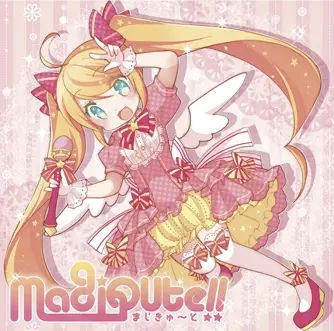NANACUBE!!!
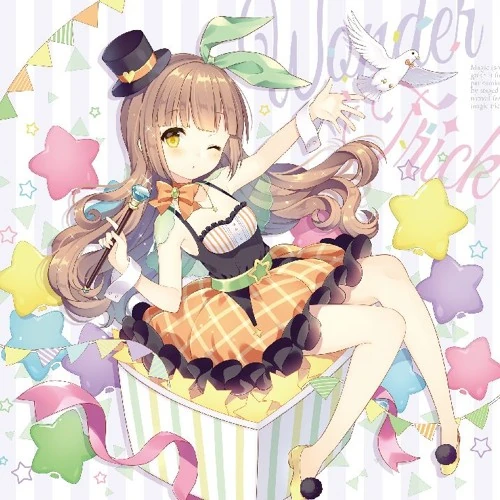NANACUBE!!!
NANACUBE!!!
NANACUBE!!!
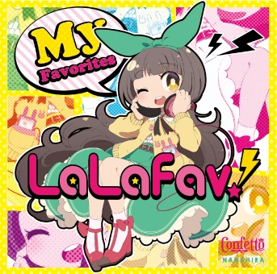NANACUBE!!!
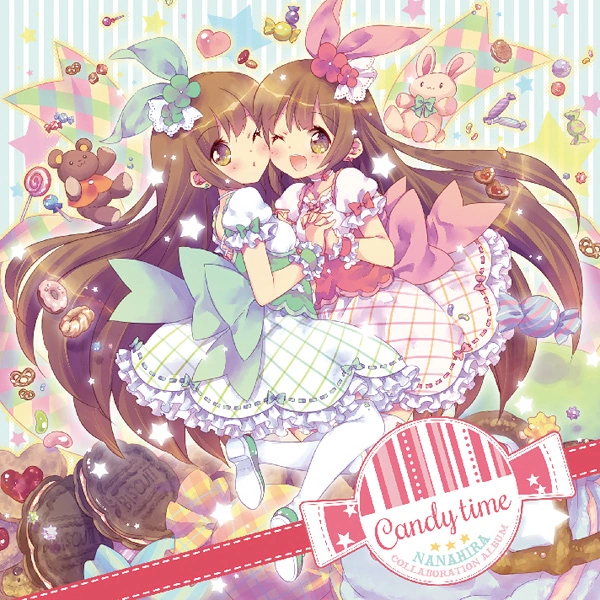NANACUBE!!!
 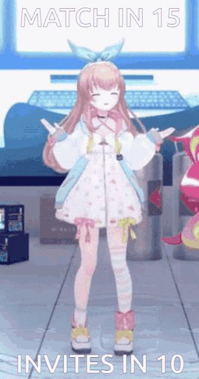
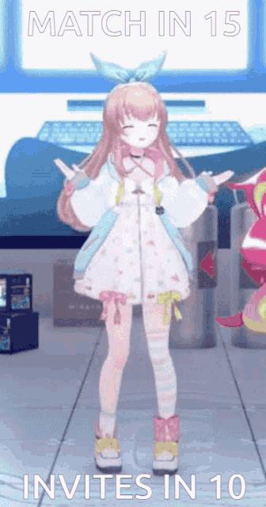